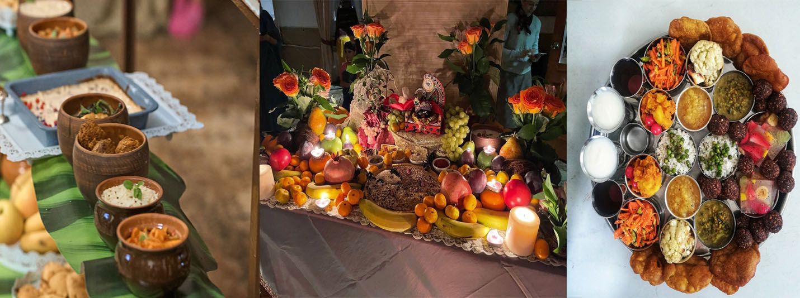

Прасад
Итак, Кришна-прасад - это пища, приготовленная с любовью к Богу и Его детям из благостных продуктов и освященная на алтаре. Духовно развитые люди употребляют в пищу только прасад, тем самым защищая себя от влияния материального осквернения и иллюзии. Для приготовления прасада нельзя использовать мясо, рыбу, яйца, лук, чеснок и другие тяжелые ингредиенты. Несвежая и испорченная пища так же не подойдет. Во время приготовления прасада должна соблюдаться исключительная чистота. Общее правило для всех: во время приготовления пищу никогда не пробуют, медитируя исключительно на то, как доставить удовольствие Богу.
Предложение приготовленной пищи Кришне на алтаре
Для освящения бхоги должен быть специальный поднос и посуда. Когда пища готова, ее раскладывают, сервируют и подают не слишком горячую, украсив поднос цветами и листьями туласи. На подносе обязательно должен быть стакан свежей воды. Жидкие блюда наливаются в глубокую посуду, твердые раскладываются в мелкую, хлеб может быть положен прямо на поднос. Соль и приправы кладутся отдельно.
После того, как поднос поставлен перед алтарем на специальный столик, надо сесть на коврик и, звеня колокольчиком, произнести трижды мантры.